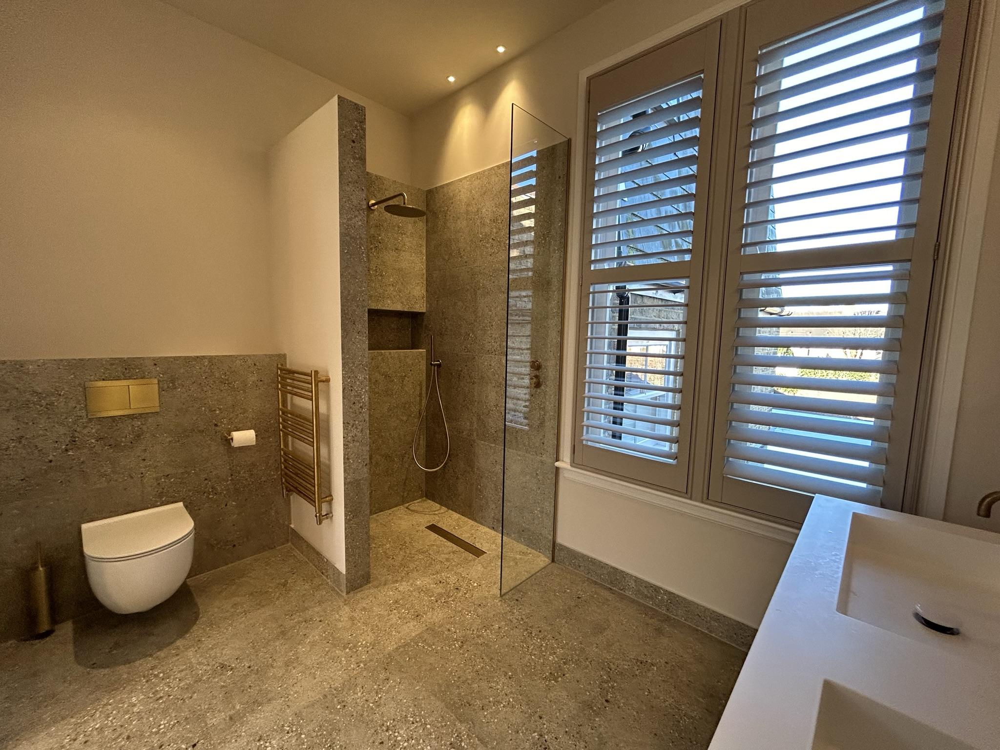
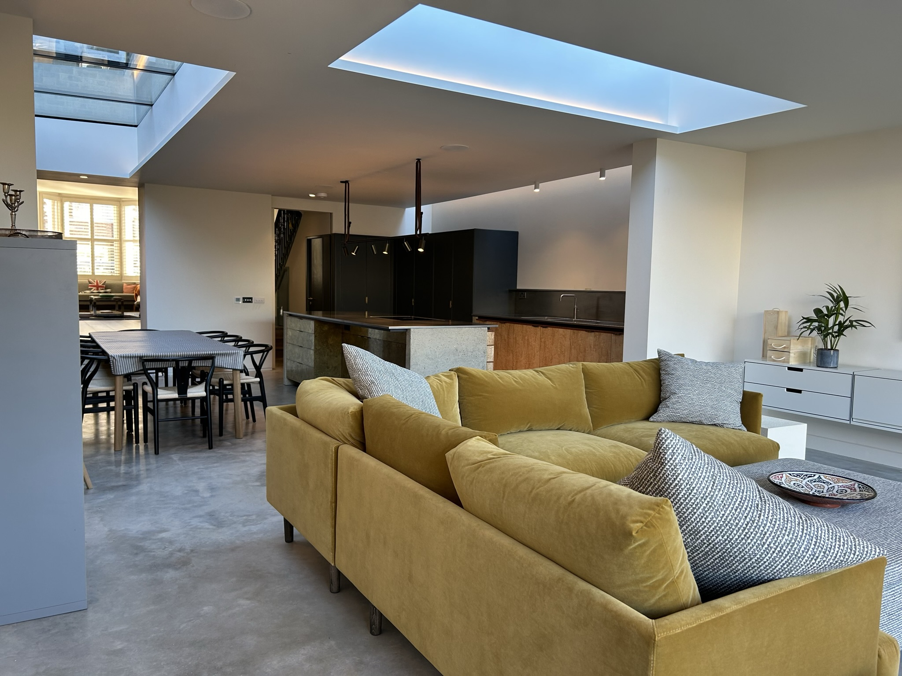
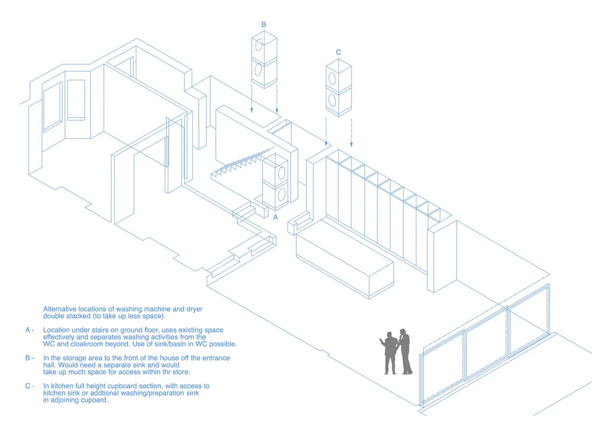
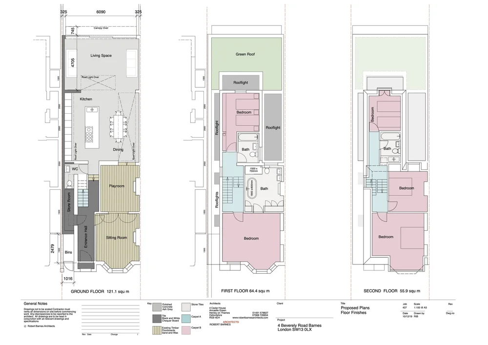
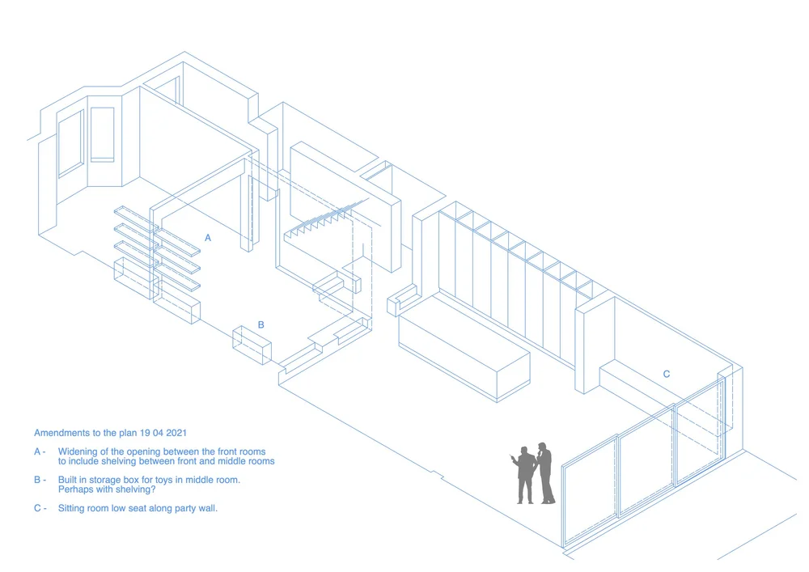

4 Beverley Road
Residential refurbishment & extension · Barnes, SW13 · Robert Barnes Architects
A major refurbishment and partial rebuild of a semi-detached house in Barnes. The ground floor was extended and entirely reorganised to create a continuous open living space for the whole family — kitchen, dining, and sitting zones defined by ceiling changes and large rooflights rather than walls.
A polished concrete floor runs uninterrupted from inside to garden, dissolving the threshold between the two. The project involved complex party wall negotiations with three adjoining neighbours and the introduction of a structural steel frame to achieve the open plan. High-end kitchen and bathroom specification throughout.
The upper floors were retained largely as existing, concentrating the intervention — and the budget — where it would have the most impact on daily family life.
With Robert Barnes Architects, London
| Type | Residential refurbishment |
| Location | Barnes, SW13 |
| Client | Private |
| Practice | Robert Barnes Architects |
| Scope | Extension, planning, party wall, interior specification |
| Status | Completed |
View project images and drawings





